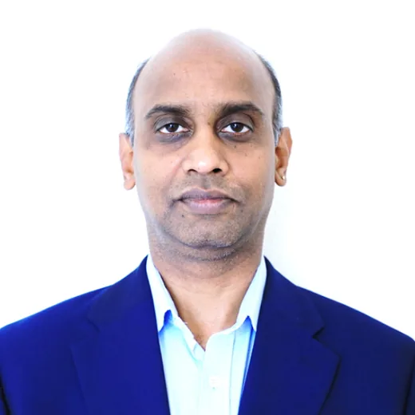

Identify the real business problem
Look past the presenting symptoms, listen closely, and define the problem in terms people can actually act on.
Shreevaari Consulting Ltd
A founder-led consultancy that identifies the real business problem, architects a practical solution, builds the MVP, and takes useful ideas out into the world.
The Belief
Okayma rests on a simple personal conviction: anything can be approached with calm thinking, honest intent, and the will to find a way through. I am not here to prove myself to anyone. I am here to put to work what I have learned, what I can imagine, and what I can build.
After more than thirty years as a Director and Solution Architect, I know the title fits. Bring me a thousand problems and I will use every ability I have to understand them, simplify them, and chart a route toward a solution.
Who You Are Working With

I have architected across retail, energy, utilities, finance, life science and eCommerce, in the UK and across EMEA, APAC and the Americas. Most of that time has been spent in the same narrow place: between a board that needs an outcome and an engineering team that needs a decision, making sure both walk away with something they can act on.
Lately the work has moved toward AI — agentic systems built on the Claude Agent SDK, retrieval pipelines grounded in a company’s own data, and the human-in-the-loop checkpoints that make any of it safe to run in production. Okayma is where I do that work on my own terms.
Three that are on the record
How Okayma Works
Look past the presenting symptoms, listen closely, and define the problem in terms people can actually act on.
Bring experience, technical depth, judgement, and out-of-the-box thinking together into a clear path forward.
Turn the idea into something visible, testable, and useful enough to invite genuine feedback and support.
Welcome the right people, from my network or well beyond it, then grow the idea together with purpose.
“He began with the real business problem rather than the presenting symptoms, and turned it into a working product that reached users quickly.”
Work With Okayma
Most engagements begin the same way. Someone knows something is wrong, and the argument about what to build has already started. The diagnostic ends that argument by writing the problem down properly first — and it is fixed in scope, so you are not signing up to open-ended discovery.
A two-week, fixed-fee first engagement. No retainer.
Yours either way, whether or not we work together again.
The fee is confirmed after a thirty-minute call and before any work begins — scope first, price second. Architecture, MVP and build engagements are quoted separately once the diagnostic is done.
Ideas And Ventures
This company is where I will shape my views into business ideas, build the proof points behind them, and share the results openly. Some ideas may become products. Some may become partnerships. Some may simply open a better conversation.
The work begins with curiosity, and becomes valuable the moment it solves something real.
You do not have to watch from the outside. If you have a business problem worth solving, or an idea that answers one, share it on the ideas board in about seventy-five words. Register with your email address, confirm the link, and your idea joins the board once it has been reviewed.
Collaborate
If you see potential in an Okayma idea, or you have a business problem worth solving, let us talk. I welcome collaborators, clients, sponsors, builders, and thoughtful people from any network.